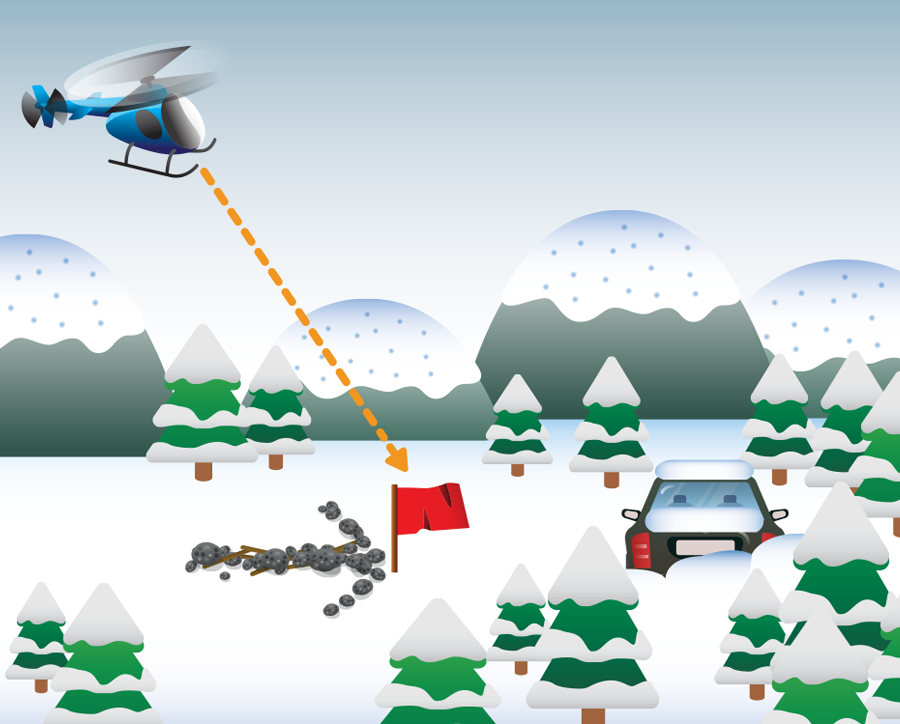

사고 지점에 눈에 잘 띄는 밝은 색 천을 걸어둡니다. 구명조끼가 오렌지색이라는 점을 떠올려 보세요. 야간에는 손전등과 차량의 헤드라이트 및 실내등을 켜 둡니다.
이동할 수 있다면 상공에서 잘 보이는 곳으로 갑니다. 계곡보다는 능선, 숲이 우거진 곳보다는 개방지가 항공 수색대의 눈에 띌 가능성이 큽니다.
부상자가 있거나 악천후로 숲이 우거진 곳, 잘 안 보이는 곳에서 벗어날 수 없다면 근처의 트인 곳을 찾아 구조요청 메시지와 함께 사고 지점 방향으로 화살표를 크게 표시해 둡니다.
사고 지점으로부터 다른 곳으로 이동할 때도 주변의 돌, 나뭇가지 등을 이용해 표시를 남깁니다. 구조대가 나중에 발견할 수도 있습니다. 아래는 모두 같은 방향을 가리키고 있습니다.